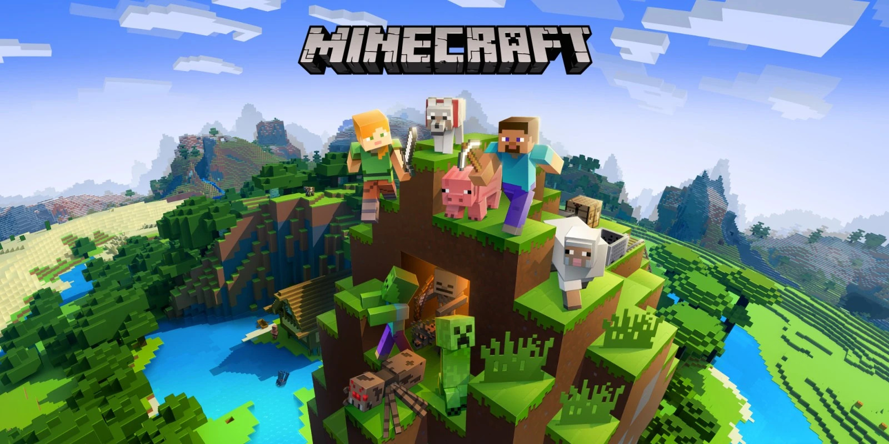
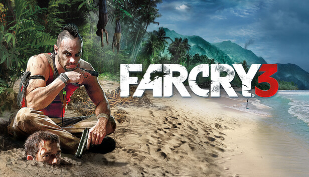

My Favorite Games
This is my curated collection of some of the games that I love. The games in this collection are just a few of my favorites, and I had a tough time deciding which ones to include, as I have played many games over the years. Even so, I think I am quite happy with the selection I have made, as these games are all unique and special to me in their own ways. Of course as I age, I will continue to play more games, and this collection may change over time, but for now, I am happy with the games I have chosen to include in this collection.

Terraria
Game | 2011 | Action-Adventure & Sandbox | Re-Logic
This is probably one of my favorite games of all time, tied for first place with another. I have spent countless hours exploring generated worlds, building amazing homes, and fighting unique and difficult bosses. The game has a simple but neat pixel art style and a layered crafting system that keeps me coming back for more, with many different playstyles that I can use, and amazing mods that feel like playing the game for the first time again. Whether I'm playing solo, which is what I usually do, or with a friend, Terraria never fails to provide a fun and engaging experience that I have to force myself to put down.

Minecraft
Game | 2009 | Sandbox Survival | Mojang Studios
When I say that Terraria is tied for first place with another game, I mean Minecraft. Minecraft is a game that I have spent countless hours playing, and it has been a significant part of my life. From playing Minecraft alone and on a server, to watching Minecraft videos on YouTube in grade school alone or with my friends, Minecraft has been a constant source of entertainment and inspiration for me. The game's open-world sandbox gameplay allows for endless creativity and exploration, and the modded community adds even more content and possibilities. It is not an exaggeration to say that Minecraft has had a profound impact on my life, and I will always have a special place in my heart for this game.

Subnautica
Game | 2014 | Action-Adventure Survival | Unknown Worlds Entertainment
Subnautica is a beautiful yet horrifying game that I have spent a lot of time playing. The game is set in an alien ocean world, and after crashing on the planet, the player must explore the depths of the alien ocean to survive and uncover the mysteries of the planet in an attempt to find a way back to civilization. The atmospheric soundtrack and stunning visuals create an immersive experience that draws players into the depths of the ocean, but you must remain vigilant, as the ocean holds many dangers. Aside from the beautiful underwater world, the game also has a compelling story that unfolds as the player progresses through the game, with an in-depth base building and crafting system that encourages you to scour the ocean depths to create your perfect home away from home.

Far Cry 3
Game | 2012 | First-Person Shooter & Action-Adventure | Ubisoft
Now for something quite different from the previous three, Far Cry 3 is a first-person shooter game that I have spent a lot of time playing as a kid. It was one of my first experiences with the first-person shooter genre, and it left a lasting impression on me. The gameplay is fun and engaging, with a variety of weapons and vehicles to use, and the open-world environment allows for exploration and discovery, with plenty of hidden treasures to find. Another factor that makes Far Cry 3 special to me is that I played it with my brother. Growing up, me and my brother shared a room and game console, so whatever games we got, it was almost always something that we both could play together, and I just have the fondest memories of playing Far Cry 3 with him.

Elden Ring
Game | 2022 | Action-Adventure RPG | FromSoftware
I actually had a lot of difficulty deciding between Elden Ring and Dark Souls Remastered for one of my favorite games, as I wanted to only choose one game from the Soulsborne series, but I ultimately decided on Elden Ring. Elden Ring is a game that I have spent a lot of time playing, mainly due to its open-world nature and innate Soulsborne difficulty, but these aspects make it a truly unique experience. The world is vast and beautiful, littered with secrets and difficult enemies, and the combat is vast and challenging, requiring skill and strategy to overcome, and when you do it feels so satisfying. While I am sure that the other FromSoftware Soulsborne games are just as good, from the two I have played, I found Elden Ring to be the most engaging and rewarding.

No Man's Sky
Game | 2016 | Action-Adventure Survival | Hello Games
This is another unique situation, as I initially wasn't that interested in No Man's Sky. Now, I didn't play it at launch when it was widely criticized for not living up to the hype as I didn't even know it existed, but after a few years, I saw it on Xbox Game Pass, got curious, and ended up playing it. It had a slow but interesting start, and after a few hours, I was hooked. The game was simply a lot of fun, with a pretty in-depth base building system and device management system that I hadn't quite seen in other games. The space travel and planet-side exploration was fun, and the story itself was amazing, genuinely a story you have to experience for yourself. Alongside all that, it had a bunch of unique mechanics sprinkled in here and there like the fact you actually have to learn the several alien languages to understand the other alien species, and that you have to actually build standing with the different species. I may have not been one of the folks who were disappointed at launch, but I was definitely one of the folks who was pleasantly surprised by how much fun No Man's Sky turned out to be, and it continues to improve with free updates. I think this game has definitely earned a place in my favorites, and I look forward to seeing what the developers have in store for the future.